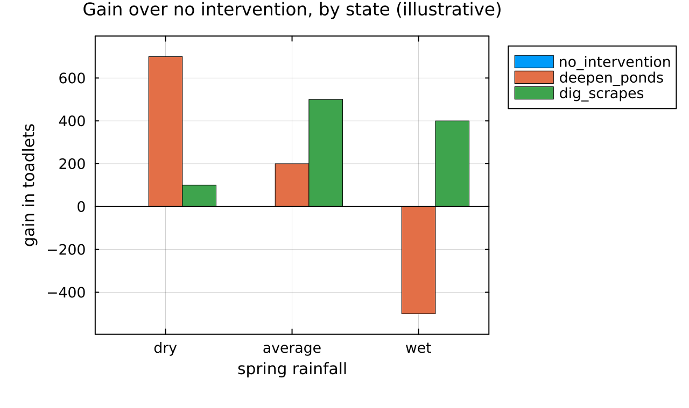

A first decision table
Simon Frost
- Motivation
- The problem
- A belief about the states
- The decision problem and its baseline
- Expected number of individuals
- Gain over no intervention
- When the state is known
- What the feasibility filter did
- What to take away
- Next
Motivation
A manager has to choose one of a few actions without knowing which state of the world will hold. Decision analysis starts by writing that down as a table: one row per action, one column per state, and in each cell the outcome of taking that action when that state holds. This vignette builds such a table with DecisionAnalysis.jl, attaches a belief about the states, and finds the action with the largest expected outcome. It also introduces the comparison that every vignette in this series makes: each action is measured against doing nothing.
The currency is individuals. Outcomes are counted as the number of animals of the focal species, never as money.
The problem
Natterjack toads breed in shallow, temporary ponds on a dune system. Shallow ponds warm quickly and hold few predators, but in a dry spring they dry out before the tadpoles have metamorphosed. The manager can leave the ponds alone, deepen the existing ponds, or dig new shallow scrapes. The outcome is the number of toadlets that leave the ponds this year. Every toadlet counts as one individual.
The state of the world is the spring rainfall: dry, average or wet.
All numbers in this vignette are illustrative. They were chosen to make the arithmetic easy to follow. They are not data and they are not estimates for any real site.
using DecisionAnalysis
include(joinpath("..", "_common.jl")) # plot defaults and small tables, no analysis
actions = [:no_intervention, :deepen_ponds, :dig_scrapes, :deepen_and_dig]
states = [:dry, :average, :wet]
toadlets = [ 200 1200 2000 # no intervention: the ponds dry out in a dry spring
900 1400 1500 # deeper ponds hold water, and in a wet spring hold predators
300 1700 2400 # more shallow ponds: more habitat, the same drying risk
1000 1800 2000] # both at once
payoff = individuals_payoff(PayoffTable(actions, states, toadlets))PayoffTable{Int64}: 4 actions × 3 states
| action | dry | average | wet |
|---|---|---|---|
no_intervention | 200 | 1200 | 2000 |
deepen_ponds | 900 | 1400 | 1500 |
dig_scrapes | 300 | 1700 | 2400 |
deepen_and_dig | 1000 | 1800 | 2000 |
PayoffTable(actions, states, Q) stores Q[a, θ], with rows for actions and columns for states. Higher is better. individuals_payoff says what the utility is: the payoff of an action in a state is the count of individuals, so the table of counts is the payoff table (the function checks that no count is negative and returns it). A PayoffTable displays itself as a table; nothing else is needed to print it.
The fourth action is the best or equal best in two of the three springs, but the site has machinery for one kind of work this season, so it cannot be carried out. It stays in the table and is excluded by a feasibility filter below.
A belief about the states
The belief is a probability for each state. Here a dry spring has probability 3/10, an average one 1/2 and a wet one 1/5 (illustrative). Writing them as rationals keeps every later number exact.
belief = FiniteBelief(states, [3 // 10, 1 // 2, 1 // 5])
md_table(["state", "probability"],
[[s, exact(p)] for (s, p) in zip(state_labels(belief), probabilities(belief))])| state | probability |
|---|---|
dry | 3/10 |
average | 1/2 |
wet | 1/5 |
The decision problem and its baseline
A DecisionProblem pairs the table with the belief. Two keywords matter here.
baselinenames the action that stands for no intervention, business as usual. Setting it changes no score and no choice. It adds the comparison with doing nothing.feasiblefilters the actions. Infeasible actions get no score and cannot be chosen.
problem = DecisionProblem(payoff, belief;
baseline=:no_intervention,
feasible=[:no_intervention, :deepen_ponds, :dig_scrapes])
feasible_actions(problem)3-element Vector{Symbol}:
:no_intervention
:deepen_ponds
:dig_scrapesExpected number of individuals
The expected number of toadlets under an action is the probability-weighted mean of its row: the sum over states of probability times outcome. aggregate with the Expectation aggregator computes it for every feasible action, and decide with MaxExpectedUtility picks the largest.
result = decide(problem, MaxExpectedUtility())DecisionResult: MaxExpectedUtility (higher is better)
| action | score | chosen |
|---|---|---|
no_intervention | 1060 | - |
deepen_ponds | 1270 | - |
dig_scrapes | 1420 | yes |
First choice: dig_scrapes
first_choice(result), act_now_value(problem)(:dig_scrapes, 1420//1)decide returns a DecisionResult with the scores, every chosen action (ties are all listed) and the rule, and it displays as the table above. first_choice gives the single deterministic choice, and act_now_value the expected number of toadlets under it.
As a check by hand, for digging scrapes: 3/10 × 300 + 1/2 × 1700 + 1/5 × 2400 = 90 + 850 + 480 = 1420.
Gain over no intervention
The number that matters to a manager is how many more individuals an action yields than doing nothing. gain_over_baseline gives that difference in every state, and expected_gain_over_baseline its expectation.
gain_over_baseline(problem)PayoffTable{Int64}: 3 actions × 3 states
| action | dry | average | wet |
|---|---|---|---|
no_intervention | 0 | 0 | 0 |
deepen_ponds | 700 | 200 | -500 |
dig_scrapes | 100 | 500 | 400 |
gain = expected_gain_over_baseline(problem)
md_table(["action", "expected gain over no intervention"],
[[a, g] for (a, g) in zip(feasible_actions(problem), gain)])| action | expected gain over no intervention |
|---|---|
no_intervention | 0 |
deepen_ponds | 210 |
dig_scrapes | 360 |
The gain table shows something the expectations hide: an action can have a positive expected gain and still lose individuals in some state. Deepening the ponds costs 500 toadlets in a wet spring.
G = gain_over_baseline(problem)
png_figure(grouped_bars(G.states, G.actions, permutedims(G.Q);
xlabel="spring rainfall", ylabel="gain in toadlets",
title="Gain over no intervention, by state (illustrative)"))
When the state is known
If the spring were known in advance the belief would be a PointBelief, and the best action would simply be the best cell in that column.
md_table(["known state", "best action", "toadlets"],
[begin
known = DecisionProblem(payoff, PointBelief(s);
baseline=:no_intervention,
feasible=feasible_actions(problem))
[s, first_choice(decide(known, MaxExpectedUtility())),
act_now_value(known)]
end
for s in states])| known state | best action | toadlets |
|---|---|---|
dry | deepen_ponds | 900 |
average | dig_scrapes | 1700 |
wet | dig_scrapes | 2400 |
The best action differs between states, which is why the uncertainty matters. The vignette on regret returns to this table of best actions.
What the feasibility filter did
Without the filter the fourth action would have been chosen.
unfiltered = DecisionProblem(payoff, belief; baseline=:no_intervention)
first_choice(decide(unfiltered, MaxExpectedUtility())), act_now_value(unfiltered)(:deepen_and_dig, 1600//1)What to take away
- A decision problem is a payoff table
Q[a, θ](rows are actions, columns are states), a belief about the states, and optionally a feasibility filter and a baseline. - Outcomes here are counts of individuals. Higher is better.
aggregate(Expectation(), problem)gives the expected count for each action anddecide(problem, MaxExpectedUtility())the action that maximises it.- Always name the no-intervention action as the
baseline.gain_over_baselineandexpected_gain_over_baselinethen report what each action adds to doing nothing. - An action with a positive expected gain can still do worse than no intervention in some states. Look at the gain table and not only at its expectation.
- Rational inputs give exact outputs.
Next
Expected utility is one rule among several. The next vignette, Decision rules side by side, applies seven rules to one table and shows where and why they disagree.